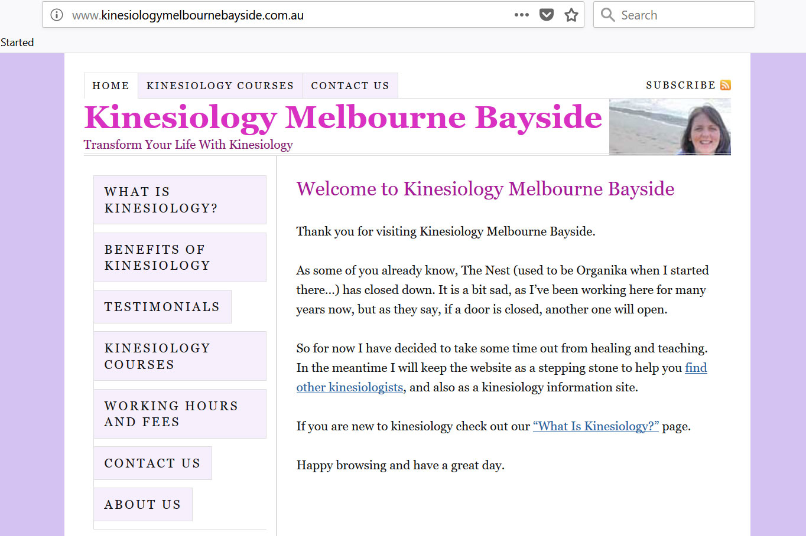

EditB's WordPress Projects
EditB's WordPress Projects
Here are some WordPress projects I've created. Enjoy your browse and have a lovely day!
KMB Website

This website was built for Kinesiology Melbourne Bayside.